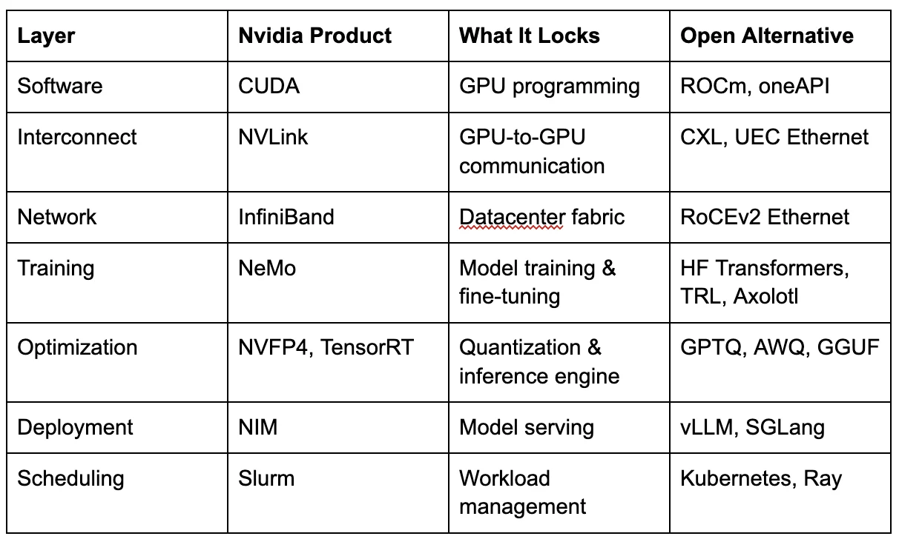
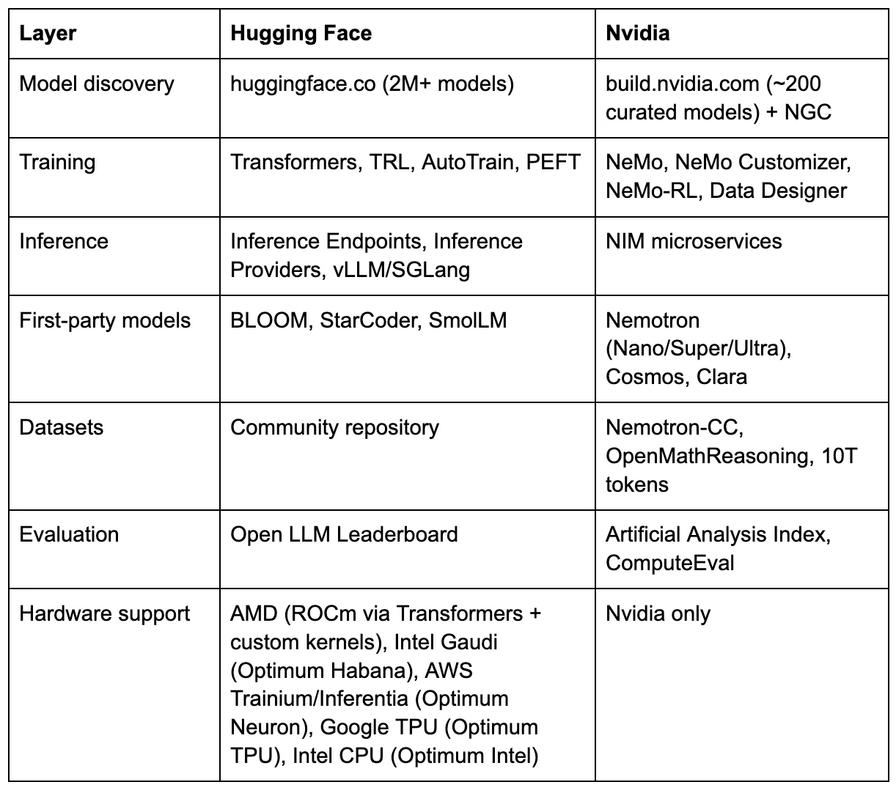

On August 8, 2023, Jensen Huang stood on stage at SIGGRAPH and asked a question.
“Where are the world’s models?”
He answered it himself: “Well, the world’s models are largely on Hugging Face today. It is the largest AI community in the world. Lots and lots of people use it. 50,000 companies. There’s some 275,000 models, 50,000 data sets. Just about everybody who creates an AI model and wants to share with the community puts it up in Hugging Face.” [1]
Then he announced a partnership: DGX Cloud training integrated into Hugging Face. “A brand new service,” he said, “to connect the world’s largest AI community with the world’s best AI training infrastructure.” Julien Chaumond, Hugging Face’s co-founder and CTO, posted the verbatim quote on LinkedIn with a heart emoji. “Thanks for the shout-out, Jensen Huang.” [2]
The DGX Cloud training service Jensen announced in that SIGGRAPH quote? Hugging Face deprecated it on April 10, 2025. [3]
On March 16, at GTC 2026, Jensen will convene a panel called “Open Models: Where We Are and Where We’re Headed.” On stage: leaders from A16Z, AI2, AMP Coalition, Black Forest Labs, Cursor, Reflection AI, and Thinking Machines Lab. Hugging Face — the largest AI community in the world, by Jensen’s own description — is not on the panel. [4]
The exclusion is surgical. Hugging Face has four sessions at GTC, including a co-presentation with Nvidia titled “The State of Open-Source AI” and a session on open-source inference. [4b] Just two months ago, at CES 2026, Jensen demoed a Reachy Mini robot running Hugging Face models on DGX Spark during his keynote. [4c] Nvidia and HF announced a joint LeRobot integration on the same day. The partnership is active. But when Jensen personally selects who shapes the keynote-level conversation about the future of open models, the company he once called the home of “the world’s models” is not invited.
In January 2026, I sat through a one-hour Nvidia presentation at an internal private equity meeting in the Bay Area. The audience was investors and portfolio company leaders, the people who decide which deployment stack their companies adopt. The word “open” was constantly used throughout. The words “Hugging Face” were not uttered once. I was media-trained at AWS, and I’m the former Chief Evangelist at Hugging Face. I noticed.
To understand why, you need to see three forces converging at once, and why Hugging Face sits at the center of all of them.
The Vacuum
The open-source AI ecosystem had one indispensable American patron: Meta. Llama was the model family that proved open weights could compete with the best closed models on standard benchmarks. It was the default starting point for enterprise fine-tuning, the foundation of sovereign AI programs from France to India to the UAE, the model that made Hugging Face the center of gravity for the AI developer community.
In late 2025, Meta began walking away.
The company is developing two new models, codenamed “Avocado” and “Mango,” targeting the first half of 2026. [5] CNBC reported that Avocado could be a proprietary model — a shift from the open-weight Llama strategy. Neither model is expected to offer weight downloads. Both would be available only through API and hosted services, the same model Meta spent years arguing against when OpenAI and Google did it. The company raised its 2025 capital expenditure guidance to $70-72 billion to build the infrastructure required for its new direction. [6]
The reversal is sharp. After Llama 4’s lukewarm reception (internal leadership admitted that “performance and popularity were behind competitors” [7]), Meta leadership directed employees to stop publicly discussing open-source and Llama products. Yann LeCun, one of the godfathers of deep learning and Meta’s most visible champion of open-source AI, left the company. Bloomberg reported that some employees had been encouraged to keep LeCun out of the spotlight. [8] Meta no longer saw him as emblematic of the company’s AI strategy. A former researcher described the dysfunction with unusual candor: “It’s not just dysfunction, it’s a metastatic cancer that is affecting the entire organisation.” [9]
The stated concern: DeepSeek’s use of Llama architecture to build competitive models at a fraction of the cost. [10] Open-sourcing, Meta’s leadership concluded, was giving Chinese competitors free access to architectures they could clone and optimize. Mark Zuckerberg confirmed that Meta would not release open-source models capable of superintelligence. [11]
The organizational restructuring signals the depth of the shift. The new closed models are being built by TBD Lab within Meta Superintelligence Labs, led by newly recruited Chief AI Officer Alexandr Wang, who was brought in through Meta’s reported $14.3 billion equity investment in his company, Scale AI. [12] The team is reportedly distilling from rival models, including Google’s Gemma, OpenAI’s gpt-oss, and Alibaba’s Qwen [13], a striking shift for a company that once positioned itself as the standard-bearer for American open-source AI.
Why does Meta’s retreat matter for this story? Because of what made Llama unique among open model families. Meta’s business model is advertising. It does not sell silicon. It does not sell inference. It had no commercial interest in which hardware you ran Llama on. That hardware-agnostic neutrality made Llama the perfect anchor for a platform like Hugging Face. Developers could download Llama, fine-tune it, and deploy it on Nvidia, AMD, or whatever hardware they had. Meta didn’t care.
With Meta going closed, that anchor disappears.
The Succession
The vacuum is not empty. Chinese labs filled it before most Western observers noticed.
On Hugging Face, Alibaba’s Qwen family has overtaken Meta’s Llama in cumulative downloads. A recent MIT study found that Chinese open-source models have surpassed American models in total downloads globally. [14] The ATOM project, which tracks open model adoption, reported that by August 2025, model derivatives based on Qwen accounted for more than 40% of all new language model derivatives on Hugging Face. Llama had fallen to roughly 15%. [15]
The numbers are hard to argue with: over 45% of top open-model downloads in 2025 came from Chinese models. [16] Qwen 2.5 variants alone were downloaded more than 750 million times during 2025, according to AI World’s Open Model Evolution dashboard (which counts downloads per model variant). [17] By January 2026, the South China Morning Post reported that cumulative downloads across the full Qwen family had surpassed 700 million (Alibaba’s own aggregate figure, using a different counting method). [18] The figures come from different sources and use different methodologies; the directional conclusion remains the same.
Chinese open models are hardware-agnostic by necessity, not by ideology. Built under US export controls that prevent dependence on Nvidia silicon, they ship with support for Huawei Ascend, Cambricon, and domestic Chinese chips alongside Nvidia GPUs. DeepSeek-V3.2 shipped with day-zero support for both — not as cloud demos, but as reproducible inference pipelines released alongside the weights. [19] Ant Group’s Ling models trained on domestic AI chips achieved near-H800 performance at 20% lower cost. [20]
This aligns Chinese models with Hugging Face’s vision of hardware-neutral openness. They radiate outward — models that work on any hardware and are released to anyone. They are the most downloaded models on the platform.
Nvidia sees this clearly. Jensen Huang told Bloomberg: “China is well ahead — way ahead on open-source.” [21] He is using the Chinese open-source surge to justify Nvidia’s own open model push. The pitch to Western enterprises is implicit: you need an open model you can trust, trained on clean data, backed by a company not subject to Chinese government influence, and with enterprise-grade deployment support. The deployment path for that trustworthy model runs through Nvidia.
The economics make this sustainable in a way Meta’s open-source strategy never was. As Next Platform put it, Nvidia is the only AI model maker that can afford to give models away forever. [22] Meta’s open-source was subsidized by an advertising business that eventually decided the subsidy was not worth the strategic exposure. Nvidia’s subsidy is structural and permanent: every open model that drives GPU adoption pays for itself through hardware margins. Against $216 billion in revenue for fiscal year 2026 (ended January 2026), [23] the estimated $1-1.5 billion Nvidia generates annually from software licensing is a rounding error. [24] The models are not the product. The GPUs are.
No other company can replicate this position. OpenAI and Anthropic charge for models because models are their product. Meta gave models away until its board decided that was a liability. Nvidia charges nothing for models because it charges for the hardware they run on. A loss leader with infinite runway.
The succession plan is already explicit. Nvidia built the Llama Nemotron model family directly on top of Meta’s Llama architecture, using Nvidia’s open datasets and post-training techniques. [25] The models inherit the parent Llama license. If Meta stops releasing new Llama weights, Nvidia already has the fork and the resources to maintain it independently.
The Nemotron 3 family is not a side project. It spans three sizes: Nano (31.6 billion total parameters with 3.6 billion active per token), Super (120 billion parameters, launched March 12, 2026), and Ultra (~500 billion parameters, expected H1 2026). [26] The architecture is a hybrid Mamba-Transformer mixture-of-experts design, a novel approach. Nvidia released the full pre-training corpus, post-training data, reinforcement learning (RL) environments, and training code alongside the model. [27] Major enterprise adopters signed on immediately. [28]
Nvidia has promoted these contributions aggressively. Kari Briski, Nvidia’s VP of GenAI Software at the time of the announcement, claimed that Nvidia was the top contributor on Hugging Face in 2025, citing 650 models and 250 datasets. [29] The claim refers to upload velocity, not total downloads: an independent analysis ranked Nvidia 34th by total all-time downloads on the platform [30], a metric that inherently favors older models but better reflects actual developer usage.
Jensen Huang framed the ambition plainly: “With Nemotron, we’re transforming advanced AI into an open platform that gives developers the transparency and efficiency they need to build agentic systems at scale.” [31] “Open platform.” “Transparency.” “Scale.” The language of Hugging Face, coming from the CEO of its most systematic competitor.
Nvidia is not the only American company trying to fill the vacuum. Arcee AI shipped Trinity Large in January 2026, a 400-billion-parameter sparse MoE trained from scratch for $20 million under the Apache 2.0 license. [32] [33] But Trinity was trained on 2,048 Nvidia B300 GPUs. The economics of the succession are circular: whether Nvidia builds the open model itself or a startup builds it, the training revenue flows to Nvidia. The question is only who controls the deployment path afterward.
The timing is suggestive, though not necessarily coordinated. Nvidia announced Nemotron 3 on December 15, 2025, [34] the same week multiple outlets reported Meta’s pivot to closed models. Super shipped on March 12, four days before GTC; Ultra is expected in the first half of 2026 — the same window Meta targets for Avocado and Mango. Nvidia is launching its most ambitious open model family at the precise moment Meta’s goes dark.
Two Definitions of Open
Two competing definitions of “open” now coexist in the AI model ecosystem. The difference between them is not quality. Both produce real value. The difference is direction: star versus black hole. A star radiates energy outward; everything in its orbit benefits from the light. A black hole is just as powerful, but nothing that crosses the event horizon comes back out. The event horizon here is not the model release. It is the deployment.
Nvidia’s open is a black hole.The models are open-weight. The datasets are released. The training recipes are published. This is genuine and should be acknowledged. Developers can and do download Nemotron models and run them on non-Nvidia hardware through vLLM, llama.cpp, and other open frameworks.
But the deployment infrastructure routes back to Nvidia. NIM (NVIDIA Inference Microservices) is Nvidia’s containerized inference platform — pre-optimized model containers that deploy with a single command on Nvidia GPUs. Production use requires an NVIDIA AI Enterprise license at $4,500 per GPU per year (list price; volume terms may vary). [35] Nemotron 3’s NVFP4 quantization format is specifically optimized for Nvidia’s Blackwell architecture. [36] The Nemotron 3 Nano technical blog states the model is “specifically designed for DGX Spark, H100, and B200 GPUs.” [37] Can you run it elsewhere? Yes. Will it run at the same throughput? No. The optimization differential is the gravity.
build.nvidia.com, Nvidia’s growing model catalog, hosts roughly 200 curated models as of early March 2026, including third-party models from DeepSeek, Mistral, Qwen, Meta, Microsoft, Google, and OpenAI, all pre-optimized as NIM containers for Nvidia silicon. [38] In two years, the catalog has grown from roughly 40 NIM microservices to more than 200, with about 80 Nvidia-developed models. Nvidia VP of GenAI Software Kari Briski told Gizmodo that Nvidia wants to be “the go-to open model platform,” framing this partly as a response to Chinese open-source dominance. [39]
A detail that reveals the strategy's architecture: build.nvidia.com includes a “Launch from Hugging Face” button, currently in beta. [40] It allows users to take any model hosted on Hugging Face and deploy it as an NIM container on Nvidia hardware. Hugging Face becomes the free catalog. build.nvidia.com becomes the paid checkout. The models are open. The orbit is closed.
NIM’s own documentation reinforces the gravitational pull, noting that Nvidia “cannot guarantee the security of any models hosted on non-NVIDIA systems such as HuggingFace.” [41] For enterprise buyers who need to justify deployment decisions to compliance teams, that single sentence can tip the scale.
An enterprise ML platform team can build the functional equivalent from open-source components: vLLM or SGLang for inference (both run on Nvidia and AMD), GPTQ, AWQ, or GGUF for hardware-agnostic quantization, Docker and Kubernetes for containerization, Ray Serve or KServe for autoscaling, and models downloaded directly from Hugging Face. Same models, same weights, no license fee. The engineering effort is real — weeks instead of days — and NIM’s enterprise support, pre-optimized containers, and security hardening have genuine value. But the $4,500/GPU/year buys packaging, not technology. The alternative to NIM is not Hugging Face. It is your own team building and owning your inference stack. Nvidia has made NIM’s onramp frictionless: build.nvidia.com offers free hosted API endpoints for prototyping, and Developer Program members can download NIM containers at no cost for development on up to 16 GPUs. You can fine-tune a supported base model and deploy it through NIM. But the catalog is the constraint. NIM only serves models whose base architecture Nvidia has pre-optimized — if your model isn’t derived from a NIM-supported base, you cannot package it as a NIM container. A developer seeking guidance on creating a custom NIM-compliant container for an unsupported model found no documented path. [41b] vLLM and SGLang, by contrast, serve any model in Hugging Face format with no catalog dependency.
The deeper friction arises at the production scale: moving from a free prototype to paid deployment requires an AI Enterprise license, which means engaging Nvidia’s sales team and negotiating an enterprise agreement. Every sales conversation is an opportunity to cross-sell Triton for inference optimization, NeMo for training, DGX Cloud for compute, and Slurm for scheduling. Everything and the kitchen sink. Each layer adopted adds a contractual dependency. Together, they compound into switching costs that building your own stack avoids. The lock-in is not in the technology. It is in the catalog and the contract.
Hugging Face’s open is a star.Models radiate outward to whatever hardware you have. This is not a recent pivot. It is a systematic investment spanning years, codified through a Hardware Partner Program launched in 2021 [42] and a growing family of dedicated Optimum libraries.
Since 2021, Hugging Face has built dedicated hardware integration libraries for every major non-Nvidia accelerator. Intel Gaudi gets Optimum Habana, with 40+ validated architectures and benchmarks showing Gaudi 2 outperforming A100 on BERT pretraining by 3x. [43] AWS Trainium and Inferentia get Optimum Neuron, actively developing with Trn2/Trn3 support and vLLM integration. [44] Google Cloud TPUs get Optimum TPU, with v5e and v6e support, though TPU availability on Inference Endpoints has since been suspended. [45] Intel Xeon CPUs are optimized with OpenVINO. [46] That last category is gaining strategic weight: as enterprise inference shifts toward smaller, domain-specific models and agentic workloads, CPUs are becoming a cost-effective alternative to GPUs for a growing share of production AI. [46b] Every model that infers on a CPU runs entirely outside Nvidia’s GPU gravity. An earlier partnership with Graphcore’s IPU ended when SoftBank acquired the company in 2024, and it exited the standalone accelerator market. [47]
The AMD partnership goes deeper than integration. Starting in 2023 with Optimum AMD and ROCm (AMD’s open-source GPU compute platform) support for MI210, MI250, and MI300 GPUs, it has evolved into active co-engineering. In late 2025 and early 2026, Hugging Face and AMD jointly developed custom MI300X kernels optimized for common transformer operations, all open-sourced in thehf-rocm-kernelsrepository. [48] In February 2026, HF launched the ROCm Kernel Builder to let the community contribute and share AMD-optimized kernels. [49] AMD’s Pervasive AI Developer Contest offers $160,000 in prizes and up to 700 hardware grants, with models required to be hosted on the HF Hub. [50] The word “partnership” undersells what is happening. Hugging Face and AMD are co-engineering production inference kernels, the kind of work that does not happen without a formal co-development agreement and dedicated headcount on both sides.
Clem Delangue delivered the keynote at AMD’s AI Day. His framing was precise: “Open-source means the freedom to build from a wide range of software and hardware solutions.” [51]
The structural conflict is now visible. Every model that runs equally well on AMD via Hugging Face’s stack does not need NIM. Nvidia GPUs still run the vast majority of AI inference workloads globally, and none of HF’s alternative hardware partnerships have changed that dominance at scale. But the AMD co-engineering is not vaporware. Custom MI300X kernels, production inference on ROCm via vLLM and SGLang, shared development teams writing fused attention operators — this is the kind of work that creates a credible alternative, even if the market share gap remains wide. Hugging Face’s hardware neutrality is not yet a market reality. It is a structural threat. And Nvidia’s entire open-model strategy is designed to prevent it from becoming one.
The Decoupling Is Already Underway
The star and the black hole are not theoretical. Over twelve months, a sequence of moves by Hugging Face systematically reduced its Nvidia dependency.
In October 2024, Hugging Face launched HUGS (Hugging Face Generative AI Services), a direct NIM competitor designed from the ground up to be hardware-agnostic. [52] Built on open-source TGI and Transformers, HUGS ran on Nvidia or AMD GPUs, with pricing that undercut NIM's: $1 per container per hour versus NIM’s $1 per GPU per hour plus AI Enterprise licensing. [53] By September 2025, HUGS was deprecated. The product never gained the enterprise traction needed to sustain it — a data point that illustrates how difficult it is to compete with a dominant vendor’s packaging, even when the underlying technology is open source.
In January 2025, Hugging Face launched Inference Providers, a new multi-vendor system for running models on third-party infrastructure. The initial partners: SambaNova, Fal, Replicate, and Together AI. TechCrunch reported that Hugging Face said its focus had shifted to “collaboration, storage, and model distribution capabilities.” [54] Nvidia was not among the inference providers.
On April 10, 2025, Hugging Face deprecated both Nvidia-powered services, the NIM API (serverless inference) and Train on DGX Cloud (training), on the same day. A one-line forum post from a Hugging Face engineer: “We decided to deprecate our Nvidia DGX Cloud Training service and Nvidia NIM API (serverless) experience.” [3] No explanation for why. The replacement: the multi-vendor Inference Providers system, where Nvidia is absent.
The architectural choice was clea,r regardless of the commercial reasons behind it. Hugging Face moved from a single-vendor Nvidia dependency to a structural multi-vendor-neutral approach.
In late 2025, Nvidia offered Hugging Face $500 million at a $7 billion valuation — more than the company had raised in its entire existence. Hugging Face said no. The company told the Financial Times it “does not want a single dominant investor that could sway decisions.” [55]
The financials give context to the decision. Hugging Face has grown revenue roughly 10x since 2021, when Forbes reported it at $10 million, reaching an estimated $70 million ARR by the end of 2023. [56] The company was profitable in 2025, though it slipped back into a loss in early 2026 after investing in datasets for its robotics and open-source initiatives. [57] Headcount has grown significantly since. Only 3% of users pay for premium services, which means the conversion headroom is enormous, but the current revenue density is thin. Roughly $200 million remains on the balance sheet from $400 million in total fundraising. [57]
With that financial profile, this was not a desperate company taking a principled stand. It was a strategic decision to preserve the one asset that makes Hugging Face irreplaceable: its neutrality between hardware vendors. CEO Clem Delangue told the Financial Times the company is “not trying to maximise revenue growth” but is “more interested in nudging developers towards open alternatives.” [55]
The Pattern
Hugging Face is not the first neutral ecosystem Nvidia has tried to acquire, failed to acquire, and then replicated. It is the latest in a documented pattern — one that spans more than a decade and has accelerated into the present.
Linux kernel drivers (2012-2022).Linus Torvalds, June 2012: “Nvidia has been the single worst company we’ve ever dealt with.” He raised his middle finger to the camera. [58] For years, Nvidia provided no documentation to the developers of the Nouveau open-source driver. When Nvidia finally released “open-source” GPU kernel modules in 2022, Red Hat engineers discovered they were thin wrappers around 30-40MB of opaque proprietary firmware running on the GPU System Processor. [59] Open-source in name. Proprietary in function. The community’s lead Nouveau maintainer subsequently left Red Hat and joined Nvidia. [60]
GeForce Partner Program (2018).Nvidia required add-in-board partners to reserve their premium gaming brands (ASUS ROG, Gigabyte AORUS) exclusively for GeForce, relegating AMD cards to lesser-known sub-brands. Partners reported that Nvidia would hold back GPU allocation if they refused. [61] The program was cancelled following scrutiny by the FTC and the European Commission. Years later, major partners still will not ship high-tier AMD Radeon cards. [62] The program is gone. The effect persists.
Mellanox (2020).Nvidia acquired the dominant InfiniBand networking provider for $6.9 billion. Pre-acquisition, Mellanox held 55-60% global market share [63] and sold to all comers. Post-acquisition, Nvidia’s networking revenue grew from $1.3 billion to over $10 billion annually. [64] The company now markets complete systems in which the switch, network adapter, DPU, CPU, GPU, and transceiver are sourced from a single supplier. Official documentation states: “NVIDIA does not support InfiniBand cables or modules not qualified or approved by NVIDIA.” [65]
The acquisition also gave Nvidia a structural narrative weapon. Jensen Huang declared at Computex 2023 that “lossy networks are unacceptable for supercomputing data centers.” [66] The statement was technically defensible and commercially convenient in equal measure. InfiniBand is lossless. Ethernet, the standard used by cloud providers who build their own GPU servers rather than buying DGX systems, is lossy by design. Nvidia’s own benchmarks show that poorly configured Ethernet clusters can deliver 30-50% lower training performance than InfiniBand equivalents. [67] The gap narrows with proper tuning: Juniper’s research and recent MLPerf benchmarks show that well-configured RoCEv2 Ethernet achieves 90-95% of InfiniBand performance. [68] But the narrative that Ethernet is fundamentally inferior for training has commercial value.
Every hyperscaler that adopts InfiniBand for its AI infrastructure buys it from one company: Nvidia. When Nvidia launched DGX Cloud as a managed service running on cloud provider infrastructure, Google, Microsoft, and Oracle agreed early. AWS held out for months before agreeing in late 2023, the last major cloud provider to sign on. [69] AWS deployed DGX Cloud on its own EFA (Elastic Fabric Adapter) Ethernet networking and Nitro system. Oracle got InfiniBand. Nvidia’s DGX Cloud head described the Oracle choice as “a result of our co-engineering for what would be the optimal experience,” [69] implicitly positioning InfiniBand as the superior option. The Ultra Ethernet Consortium, founded in July 2023 with AMD, Broadcom, Cisco, Intel, Meta, and Microsoft as members, exists for one reason: to build an Ethernet alternative to InfiniBand that breaks Nvidia’s networking lock-in. [70]
The DOJ began investigating in mid-2024 and issued formal subpoenas in September; no formal complaint has been filed. [71] The probe examines whether Nvidia bundles its chips, networking equipment, and software in ways that penalize customers who use competitors’ products. The core allegation: customers who buy Nvidia’s full networking stack get preferential GPU pricing and allocation, while those who use competitors’ equipment face restricted chip access. Jim Keller, CEO of competitor Tenstorrent, said customers “feel pressured to buy Nvidia’s networking gear to guarantee themselves access to the company’s vaunted AI server chips.” [72] Patrick Moorhead of Moor Insights was blunter: “It’s not volume-based pricing, it’s exclusionary-based pricing. You can’t do that if you’re a monopoly.” [72] China’s SAMR (State Administration for Market Regulation) issued a preliminary finding in September 2025 that Nvidia violated the anti-monopoly law related to the acquisition’s conditions. [73]
ARM (2020-2022).Nvidia attempted a $40 billion acquisition of ARM Holdings, the neutral CPU architecture that underpins nearly every competitor’s chips. ARM co-founder Hermann Hauser warned: “It’s in Nvidia’s interests to destroy ARM.” [74] The FTC voted 4-0 to sue to block the deal. [75] The UK, EU, and China piled on. The deal collapsed in February 2022. Nvidia’s response: it had announced the Grace CPU in April 2021, seven months into the acquisition process, while the deal was still pending. [76] By March 2025, Nvidia revealed the Vera CPU with fully custom “Olympus” cores, eliminating dependence on ARM’s core designs. [77] In Q4 2025, Nvidia sold its entire remaining equity stake in ARM. [78] If you cannot buy the neutral platform, build your own and walk away.
Open-source inference (2023-present).Nvidia sponsors vLLM, the dominant open-source LLM inference engine, co-hosts meetups, and publishes optimized containers. [79] Then it built NIM on top: a proprietary packaging layer that wraps open-source engines in enterprise licensing for $4,500 per GPU per year. NIM’s container images include a proprietary module calledvllm_nvext, a closed-source extension built on the open-source project. [80] The open-source engine becomes the free input. The proprietary wrapper becomes the revenue stream.
Run:ai (2024).Nvidia acquired the GPU orchestration platform for $700 million, promising to open-source it. [81] Post-acquisition, Nvidia open-sourced only the KAI Scheduler component under the Apache 2.0 license. [82] The full commercial platform remains proprietary and Nvidia-exclusive.
SchedMD/Slurm (2025).Nvidia acquired the developer of Slurm, the workload manager used by roughly 60-65% of TOP500 supercomputers. [83] Next Platform’s headline: “Nvidia Nearly Completes Its Control Freakery With Slurm Acquisition.” [84] Slurm is open source under the GPL v2.0, which prevents relicensing, but whoever controls the maintainer controls the roadmap. The precedent: Nvidia acquired Bright Computing in 2022. By October 2024, it stopped selling Bright as a standalone product and bundled it exclusively into the AI Enterprise stack at $4,500 per GPU per year. [85]
The pattern across these cases is consistent, and the chronology tells its own story. It begins with open-source hostility (Torvalds, 2012), escalates to channel control (GeForce Partner Program, 2018), moves to strategic acquisition of neutral infrastructure (Mellanox 2020, ARM attempted 2020-2022), then accelerates into the AI era with open-source co-option (vLLM/NIM, 2023), acquisition-and-bundle (Run:ai 2024, Slurm 2025), and now model-layer replication (Nemotron, build.nvidia.com, 2025-2026). The playbook is not static. It is evolving, and each iteration is more sophisticated than the last. What separates this from normal vertical integration is market share. When a company with 5% of the accelerator market builds an alternative to a partner, that is competition. When a company with 80-95% of the market [86] builds an alternative to the only neutral platform in its ecosystem, the structural implications are different.
Semiconductor analyst Doug O’Laughlin of Fabricated Knowledge has applied the explicit “embrace, extend, extinguish” framework to Nvidia’s NVLink Fusion interconnect strategy. [87] The model layer is the latest domain where this pattern is playing out. And the HF case maps onto it with uncomfortable precision: Nvidia invested in HF’s Series D (embrace), became a major model contributor (extend), then built build.nvidia.com, NIM, and Nemotron as a parallel stack that captures enterprise value while HF hosts the community (commoditize). The $500 million offer was an acquisition attempt. The rejection may have accelerated what came next, but the replication was already underway — the same sequence ARM followed. Nvidia tried to buy the neutral platform for $40 billion, was blocked, built Grace and Vera as replacements, and sold its ARM stake. Nvidia offered Hugging Face $500 million, but was refused, and is now building the parallel stack described in this piece.
Nvidia’s approach differs from prior tech monopoly playbooks in its multi-layer execution. The lock-in is not at a single point. Each layer reinforces the others. A customer who uses Nvidia GPUs, Nvidia networking, Nvidia inference, and Nvidia scheduling faces switching costs across all layers simultaneously.

Every layer has a performant open alternative. Every layer is a reasonable product choice in isolation. Together, they compound into a stack you cannot leave without replacing seven components simultaneously. That’s not switching costs. That’s a migration project.
IBM controlled this many layers in the mainframe era, and the DOJ’s 1969 antitrust suit prompted it to unbundle software and services from hardware — a move widely credited with creating the independent software industry. [87b] The difference: IBM’s stack was a single vertically integrated product. Nvidia’s layers are nominally independent purchasing decisions that compound into lock-in only after adoption.
The concentration of control also makes the ecosystem difficult to criticize openly. In November 2025, Nvidia’s investor relations team circulated a private, seven-page memo to Wall Street sell-side analysts, pushing back point by point on criticisms from investor Michael Burry (who compared Nvidia to Cisco) and a Substack writer who compared its accounting to Enron-era fraud. [88] The Enron comparison was overwrought, and Nvidia had reason to respond. But the form of the response was revealing. The memo was not filed as an 8-K. Bernstein published it in full. Barron’s senior tech writer Tae Kim observed that Nvidia should have disclosed it through a proper SEC filing rather than emailing it privately to analysts. [89] Reuters described the episode as Nvidia “waging an information campaign on Wall Street and social media.” [90] Harbor Research analyst Jay Goldberg called the communication strategy “seriously flawed” and noted that “the decision to respond to these rumors in a memo with limited disclosure itself appears unusual.” [91] The memo targeted fraud allegations, not competitive criticism. But the demonstrated willingness to privately mobilize against public skeptics signals something about the cost of dissent in Nvidia’s ecosystem.
Hugging Face is the eighth entry in this sequence. The model repository and deployment layer. The last major neutral infrastructure between Nvidia’s hardware and the applications that run on it. As this piece goes to publication, Wired reports that a ninth may be forming: Nvidia is pitching “NemoClaw,” an open-source AI agent platform, to Salesforce, Cisco, Google, Adobe, and CrowdStrike ahead of GTC — hardware-agnostic at launch, built on Nvidia’s NeMo stack. [94]
The Replication Map
What Hugging Face built, and what Nvidia has built or is building alongside it.

Nvidia does not need to match Hugging Face on every layer. The roughly 200 models on build.nvidia.com are not trying to replicate HF’s two-million-model community catalog. They are trying to own the layer where money flows: enterprise deployment. The “Launch from Hugging Face” button tells the story. Discover the model on HF for free. Deploy it through Nvidia for $4,500 per GPU per year.
Hugging Face becomes the community tier. Nvidia becomes the enterprise tier. The switching costs compound with each layer a customer adopts.
The Best Case for Nvidia
Nvidia’s defenders have legitimate points.
The models are open in a way most labs are not. Nemotron weights, datasets, training recipes, and RL environments are published under Nvidia’s Open Model License, which allows commercial use, modification, and distribution. (The Llama Nemotron variants inherit Meta’s more restrictive community license.) Developers can and do run them on non-Nvidia hardware. The Nemotron 3 technical report is more detailed than what most frontier labs publish. The training data, including the Nemotron-CC Common Crawl corpus, is released openly, which exposes Nvidia to non-trivial legal risk and almost no other company at this scale is willing to do. [27]
Nvidia’s own characterization of its contributions warrants scrutiny. In October 2025, Nvidia’s blog claimed it was “a top contributor to Hugging Face, with more than 650 open models and 250 open datasets.” [29] The linked source clarified that Nvidia topped new repository uploads in 2025 — a measure of upload velocity, not downloads or developer usage. [92] An independent analysis ranked Nvidia 34th by total all-time downloads on HF. [30] Google, Meta, Microsoft, and several individual researchers all outrank it. By January 2026, Nvidia’s blog escalated to “NVIDIA’s open robotics models and datasets leading the platform’s downloads.” [93] The most-downloaded models on HF are sentence transformers, BERT variants, and Whisper. None are from Nvidia.
Clem Delangue was quoted in the October press release praising the contributions: “NVIDIA’s contributions to the open model ecosystem, commitment to open research for AI and Hugging Face’s ecosystem will empower millions of developers.” [29] The quote is diplomatic. HF’s platform would function without Nvidia’s models. It would not function without Qwen, DeepSeek, Mistral, and the thousands of community contributors who generate the platform’s actual download volume.
NIM solves a real problem. Enterprise deployment of open models requires integration work that many companies prefer to buy rather than build. The open-source components exist, but the packaging, support, and optimization that NIM provides have genuine value — and so does the vendor behind it. A team that invests in optimizing vLLM or SGLang with the right quantization and serving configuration can match or approach NIM’s performance — but that investment builds an internal AI practice, not a vendor dependency. Enterprise buyers factor in longevity: Nvidia will exist in five years. Hugging Face is a startup with $200 million in the bank. For a CISO choosing a deployment platform, that asymmetry matters independently of any lock-in concern. Charging for it is legitimate business. The $4,500/GPU/year price point is not unusual for enterprise software. [35]
Competition benefits developers. Hugging Face’s Inference Providers and the open-source inference ecosystem (vLLM, SGLang, and others) exist as alternatives to NIM — though HUGS, HF’s most direct NIM competitor, was deprecated in September 2025 after failing to gain enterprise traction. The multi-vendor inference market is better for practitioners than any monopoly would be. Nvidia’s open model push has also accelerated open dataset publishing, benefiting the entire ecosystem. And Nvidia’s primary target may not be Hugging Face at all — it may be the hyperscalers’ proprietary model APIs (Azure OpenAI, Bedrock, Vertex AI), with HF caught in the crossfire of a larger fight for who owns the enterprise model layer.
These points are true. They are also compatible with the structural argument. CUDA’s history demonstrates that technical excellence and ecosystem lock-in are not mutually exclusive. CUDA is the best GPU programming platform available. It is also the deepest moat in computing. Nvidia can deliver superior products at every layer, and those products can still function as the mechanism that closes the orbit.
The question is not whether Nvidia is doing good work. It is. The question is whether the structural incentives of a hardware monopolist that controls the dominant open model family, the enterprise deployment stack, the training infrastructure, the networking layer, and now the scheduling layer create forces that undermine hardware choice over time. The pattern evidence across eight domains and 18 years of CUDA history suggests they do.
The Verdict
Meta is going closed. Chinese models face geopolitical headwinds. Nvidia is building a parallel stack that turns “open” into a funnel for hardware lock-in. Hugging Face sits at the center of all three forces, and its survival depends on being essential to everyone who doesn’t want to be locked into a single vendor. The 2023 Series D investor list already reads this way: Google, Amazon, Nvidia, Intel, AMD, Qualcomm, IBM, and Salesforce. [95] Every major hardware player is betting on neutrality. The question is whether they will bet again at the required scale before the event horizon is crossed.
In August 2023, Jensen Huang told the world where the models are. “The world’s models are largely on Hugging Face today.” At GTC 2026, he is convening a panel on the future of open models — without the company he named. He demoed their robot at CES two months ago to promote his own models. His team co-presents a session with them at the same conference. At PE meetings, his team says “open” sixty times an hour and “Hugging Face” not once.
The question is not whether Nvidia is trying to own the open model layer. The evidence says it is. The question is whether anyone is investing hard enough in the alternative.
Notes
[1] Jensen Huang, SIGGRAPH 2023 keynote, August 8, 2023. Quote verified againstNVIDIA-Hugging Face partnership press release, August 8, 2023, and Nvidia CFO Colette Kress’s remarks on Q2 FY2024 earnings call, August 23, 2023.
[2] Julien Chaumond, LinkedIn post, August 8, 2023. Verbatim quote from Jensen’s keynote with heart emoji. LinkedIn does not support permanent post URLs for non-logged-in users; searchable by name and date.
[3] Simon Pagez (Hugging Face engineer),Hugging Face forum post, April 10, 2025: “We decided to deprecate our Nvidia DGX Cloud Training service and Nvidia NIM API (serverless) experience.”
[4] GTC 2026 agenda andNVIDIA Newsroom press release, March 3, 2026. Open models panel: A16Z, AI2, AMP Coalition, Black Forest Labs, Cursor, Reflection AI, and Thinking Machines Lab. Hugging Face is listed among participating organizations at GTC but is not on Jensen’s open models panel. Perplexity and LangChain CEOs are pregame show speakers, not panel participants.
[4b] Hugging Face has four sessions at GTC 2026: “The State of Open-Source AI” (S81791, co-presented with Nvidia, Tue 3/17 4pm), GTC Developer Livestream (Wed 3/18 11:30am), Novita GTC After Hours: From Models to Agents to Infra (Wed 3/18 7pm), and “Accelerate AI Through Open-Source Inference” (S81902, Thu 3/19 1pm). HF is present at GTC — just not on the keynote open models panel Jensen personally convenes.
[4c] Jensen Huang CES 2026 keynote, January 5, 2026. Reachy Mini robot demo using Hugging Face models on DGX Spark. Same day,NVIDIA Newsroomannounced Nvidia-HF LeRobot integration: “NVIDIA and Hugging Face integrate NVIDIA Isaac open models and libraries into LeRobot to accelerate the open-source robotics community.” See alsoHugging Face blogandTechCrunchcoverage.
[5]CNBC, December 9, 2025, reported Avocado “could be a proprietary model.”WinBuzzer, December 19, 2025;TechCrunch, December 19, 2025. Originally reported by Wall Street Journal, December 18, 2025. The WSJ reported the models’ existence and development roadmap; the proprietary licensing characterization originates with CNBC.
[6] Meta Q3 2025 earnings guidance (October 29, 2025) set 2025 capex at $70-72 billion. Actual full-year 2025 capex was $72.22 billion perMeta Q4/FY2025 results, January 28, 2026.
[7] Bloomberg, “Meta Pulls Back on Open-Source AI,” December 2025. Behind paywall. Cited via secondary reporting inWinBuzzerandTMTPOST.
[8] Bloomberg, December 2025. LeCun departure and internal directives. Behind paywall. Cited viaTMTPOSTandWinBuzzer.
[9] Tijmen Blankevoort (former Meta researcher), quoted inWinBuzzer, December 19, 2025.
[10] DeepSeek’s use of Llama architecture cited as internal concern.WinBuzzerandTMTPOST, December 2025.
[11] Zuckerberg confirmation that Meta would not release superintelligence-capable models as open-source.WinBuzzer, citing CNBC, December 2025.
[12] Meta’s $14.3 billion equity investment in Scale AI (acquiring a 49% stake, valuing Scale AI at ~$29 billion) and Alexandr Wang’s appointment as Meta’s Chief AI Officer.TMTPOST, December 19, 2025, citing Wall Street Journal.CNBCandFortunecorroborate the figure.
[13] Bloomberg, December 2025. TBD Lab distilling from rival models including Gemma, gpt-oss, and Qwen.TMTPOST: “Bloomberg reported that Meta’s TBD Lab is using several third-party models including Google’s Gemma, OpenAI’s gpt-oss and Alibaba’s Qwen in Avocado’s training process.”
[14]MIT Technology Review, “What’s Next for Chinese Open-Source AI,” February 12, 2026.
[15] ATOM Project data viaMIT Technology Review, February 2026. Qwen derivatives >40% of new HF language-model derivatives; Llama ~15%.
[16] AI World /Open Model Evolution dashboard, 2025 data.
[17] AI World /Open Model Evolution dashboard, 2025 data. Qwen 2.5 download count.
[18] South China Morning Post, “Alibaba’s Qwen AI models downloaded 700 million times,” January 2026. Cited viaXinhua. Different counting methodology from AI World; directional finding consistent.
[19]Hugging Face blog, “One Year Since the DeepSeek Moment,” 2026. DeepSeek-V3.2 Ascend and Cambricon day-zero support.
[20]Hugging Face blog, “One Year Since the DeepSeek Moment,” 2026. Ant Group’s Ling models on domestic chips.
[21] Jensen Huang, Bloomberg interview, 2025. “China is well ahead — way ahead on open-source.” Behind paywall; quoted in multiple secondary sources.
[22]Next Platform, analysis of Nvidia’s open model economics, 2025. Nvidia described as “the only AI model maker that can afford to give models away forever.”
[23]Nvidia FY2026 earnings release, February 2026. Full-year FY2026 revenue of $215.9 billion (fiscal year ended January 25, 2026).
[24] Nvidia management indicated software and services revenue exceeded a $1 billion annual run rate in early 2024; the $1-1.5 billion range reflects subsequent analyst estimates. Nvidia does not break out software licensing as a separate line item in its financial statements.
[25]developer.nvidia.com/nemotron. Llama Nemotron built on Llama architecture.
[26]NVIDIA Newsroom, Nemotron 3 announcement, December 15, 2025. Model sizes and timeline.
[27] Nvidia technical blog andHugging Face nvidia model cards, 2025-2026. Pretraining corpus, post-training data, RL environments, and training code released alongside models.
[28]NVIDIA Newsroom, Nemotron 3 announcement, December 2025. Named early adopters: Accenture, CrowdStrike, Oracle Cloud, Palantir, Perplexity, ServiceNow, and Cursor.
[29] NVIDIA Blog,“NVIDIA Launches Open Models and Data to Accelerate AI Innovation,”October 28, 2025. “As a top contributor to Hugging Face, with more than 650 open models and 250 open datasets.” Delangue quote from same release.
[30] Loïck Bourdois,“Model statistics of the 50 most downloaded entities on Hugging Face,”data collected October 1, 2025. Nvidia ranked 34th by total downloads. Bourdois noted: “NVIDIA is extremely balanced (it’s not a single model that drives all the entity’s downloads).”
[31] Jensen Huang, quoted inNVIDIA Newsroom, Nemotron 3 announcement, December 2025.
[32] Arcee AI, Trinity Large announcement, January 2026.TechCrunchandVentureBeatreporting.
[33]VentureBeat, January 2026. Arcee and OpenAI’s gpt-oss identified as the two American companies releasing frontier-class open models trained from scratch.
[34]NVIDIA Newsroom, December 15, 2025.
[35]NVIDIA AI Enterprise licensing documentation. List price $4,500 per GPU per year for production NIM deployment. Volume terms may vary.
[36] Futurum Group analysis, 2025. NVFP4 format “specifically suited for NVIDIA Blackwell architecture.”
[37] NVIDIA Technical Blog, Nemotron 3 Nano, 2025. “Specifically designed for DGX Spark, H100, and B200 GPUs.”
[38]build.nvidia.com, direct observation as of March 2026. 213 curated models, 84 Nvidia-developed.
[39] Kari Briski, quoted in Gizmodo, 2025. “The go-to open model platform.”
[40]build.nvidia.com, “Launch from Hugging Face” button, beta feature, direct observation.
[41] NVIDIA NIM documentation, security caveat regarding non-NVIDIA-hosted models.
[41b]NVIDIA Developer Forums, February 25, 2025. Developer asks: “I’m now exploring how to package my own model as a NIM. So far, all NIM models appear to be official, and I haven’t found any guidelines for creating a NIM-compliant container.” NIM fine-tuned model documentation confirms: “The base model must be available as a downloadable NIM for LLMs.” SeeNVIDIA NIM fine-tuned model support.
[42] Hugging Face Hardware Partner Program, announced at AI Hardware Summit, 2021.
[43]Optimum Habana documentation and benchmarks. Intel Disruptor Program participation.
[44]Optimum Neuron. v0.4.1 release with Trn2/Trn3 benchmarks, Qwen3 fine-tuning support.
[45]Optimum TPU. TPU on Inference Endpoints suspended per HF forum response.
[46]Optimum Intel. Quantization, pruning, knowledge distillation via Neural Compressor and OpenVINO.
[46b] Dan McNamara (AMD SVP), quoted inYahoo Finance, “CPUs are back en vogue in the data center,”March 4, 2026: “As customers are evolving and shifting more towards inference, they’re using smaller language models, they’re using more domain-specific models, and a lot of that runs more efficiently on CPUs.” Intel CEO Lip-Bu Tan cited AI as a major driver for CPU demand on Intel’s January 2026 earnings call. Meta announced its largest deployment of Nvidia Grace CPU-only servers and a separate deal with AMD including Venice and Verano CPUs.
[47] Graphcore acquired by SoftBank, 2024. Exited standalone accelerator market. Earlier HF partnership launched 2021 AI Hardware Summit.
[48]github.com/huggingface/hf-rocm-kernels. Custom MI300X kernels co-developed with AMD, late 2025-early 2026.
[49]Hugging Face blog, “ROCm Kernel Builder,”February 2026.
[50]AMD Pervasive AI Developer Contest. $160,000 in prizes, up to 700 hardware grants, models hosted on HF Hub.
[51] Clem Delangue, AMD AI Day keynote. Quoted inHugging Face blog, “Hugging Face and AMD”.
[52] HUGS documentation (archived),huggingface.co/docs/hugs. Launched October 2024 perInfoWorld. Deprecated September 2025.
[53] HUGS pricing perHF documentation. NIM pricing perNVIDIA AI Enterprise licensing. Comparison: $1/container/hour vs. $1/GPU/hour + AI Enterprise license.
[54]TechCrunch, “Hugging Face launches Inference Providers,”January 2025. Quote: “collaboration, storage, and model distribution capabilities.”
[55] Financial Times, “Why AI start-up Hugging Face turned down a $500mn Nvidia deal,” late 2025. Behind paywall. Cited viaOODAloopandFudzilla. $500M offer at $7B valuation. “Does not want a single dominant investor that could sway decisions.” Delangue: “not trying to maximise revenue growth.”
[56] Revenue: $10M (2021) per Forbes viaAxios, August 2023. $70M ARR (end of 2023) perSacraestimate, widely cited. Third-party trackers (GetLatka, Gitnux) cite higher 2024 figures ($100-130M) but these are unconfirmed estimates for a private company; Delangue has not publicly disclosed a specific 2024 revenue number.
[57] Profitability and loss timeline perFudzilla, 2026, citing Delangue: “Hugging Face was profitable in 2025, then slipped into a first-quarter loss this year after investing in datasets.” Delangue also posted on X in mid-2024 that HF was profitable. Cash position: “about half” of $400M total fundraising “still on the balance sheet” per same Fudzilla article. 3% conversion rate per Financial Times (behind paywall; see [55]).
[58] Linus Torvalds, Aalto University Q&A, June 2012.Video on YouTube. Reported byPhoronix.
[59] Dave Airlie (Red Hat kernel engineer),LWN.net analysis, 2022. “Open-source” kernel modules as wrappers around proprietary GSP firmware.
[60] Ben Skeggs (Nouveau maintainer) resignation from Red Hat and hire by Nvidia, reported byPhoronix.
[61] Kyle Bennett,HardOCP, 2018. GeForce Partner Program brand alignment requirements and GPU allocation threats.
[62] Persistent brand alignment effects post-GPP cancellation. Industry observation.
[63] China SAMR filing, Mellanox acquisition conditions. 55-60% InfiniBand market share.
[64] DataGravity analysis. Nvidia networking revenue growth from $1.3B to $10B+.
[65] NVIDIA InfiniBand documentation. Cable and module qualification requirement.
[66] Jensen Huang, Computex 2023 keynote. Reported inMedium analysis.
[67]HPCwire, June 2025. 30-50% performance gap for non-optimized Ethernet vs. InfiniBand.
[68] Juniper Networks research whitepaper, 2024. 55% TCO savings, 90-95% InfiniBand performance with properly configured RoCEv2 Ethernet. Also MLPerf benchmark data showing <0.03% performance delta in some AI workloads.
[69]Data Center Dynamics, “Nvidia’s DGX Cloud”, 2025. “Google, Microsoft, and Oracle agreed to the proposal early on, but AWS held out until December, when it finally caved.” Bjorlin quotes on AWS EFA/Nitro and Oracle InfiniBand.
[70]Ultra Ethernet Consortium, founded July 19, 2023 perLinux Foundation press release. Founding members include AMD, Arista, Broadcom, Cisco, Eviden, HPE, Intel, Meta, and Microsoft.
[71] DOJ antitrust investigation opened mid-2024, subpoenas issued September 2024. Bloomberg (behind paywall);CNBC;Fortune.
[72] Jim Keller (Tenstorrent CEO) and Patrick Moorhead (Moor Insights), quoted inFortune, “Nvidia faces DOJ antitrust probe”, 2025.
[73] China SAMR preliminary finding of anti-monopoly law violation, September 2025.CNBC.
[74] Hermann Hauser, quoted inCNBC, “ARM co-founder warns Nvidia deal”, 2020.
[75] FTC vote 4-0 to block Nvidia-ARM acquisition,FTC press release, December 2021.
[76] Grace CPU announcement, April 2021.HPCwire.
[77] Vera CPU with “Olympus” cores, March 2025.PC Gamer, NVIDIA.
[78] Nvidia ARM stake sale, Q4 2025. Baptista Research.
[79] vLLM sponsorship:vLLM GitHub, meetup records.
[80]vllm_nvextproprietary module in NIM containers: Hacker News user reports; TensorRT-LLM code closure analysis bySqueezeBits, March 2025.
[81] Run:ai acquisition, $700M, completed December 2024.VentureBeat;Yahoo Finance.
[82] KAI Scheduler open-sourced under Apache 2.0, March 2025.VentureBeat.
[83] SchedMD/Slurm acquisition, December 2025.TechCrunch;NVIDIA Newsroom.
[84]Next Platform, “Nvidia Nearly Completes Its Control Freakery With Slurm Acquisition,”December 2025.
[85] Bright Computing acquired 2022, stopped selling standalone by October 2024.Bizety.com;Next Platform.
[86] Nvidia AI accelerator market share estimates of 80-95% from multiple analyst reports includingThe Register, January 2024.
[87] Doug O’Laughlin,Fabricated Knowledge, “NVLink Fusion: Embrace, Extend, Extinguish,”May 2025.
[87b] The DOJ filed its antitrust suit against IBM on January 17, 1969, alleging monopolization of the general-purpose computer market. IBM preemptively announced unbundling of software and services from hardware in June 1969, before the case progressed, to reduce legal exposure. The suit lasted 13 years and was dismissed as “without merit” in 1982, but the unbundling is widely credited with creating the independent software industry and enabling the rise of Microsoft. SeeProMarket, “Driving Innovation with Antitrust,”April 2024;Truth on the Market, “The Ghosts of Antitrust Past: IBM,”February 2020.
[88] Nvidia seven-page memo to sell-side analysts, November 2025. First reported by Barron’s (behind paywall). Seen byReuters. Published in full by Bernstein. The memo responded to two critics: Michael Burry, who compared Nvidia to Cisco on X, and Substack writer Shanaka Anslem Perera, who compared Nvidia’s accounting to Enron. Burry explicitly rejected the Enron framing: “I am not claiming Nvidia is Enron. It is clearly Cisco.”
[89] Tae Kim, Barron’s senior tech writer, November 2025. “Nvidia should have published this in an 8-K filing.” Behind paywall.
[90]Reuters, “Nvidia waging an information campaign on Wall Street and social media,”November 27, 2025.
[91] Jay Goldberg, Harbor Research, quoted inMarketWatchviaFutu, November 2025. “Seriously flawed.” “The decision to respond to these rumors in a memo with limited disclosure itself appears unusual.”
[92] AI World,“NVIDIA Leads Open Source AI Momentum as Chinese Labs Close In,”October 16, 2025. “NVIDIA has emerged as a surprising leader in this space, topping open source AI repository contributions in 2025.” This is the source Nvidia’s October blog linked to for its “top contributor” claim.
[93] NVIDIA Blog,“NVIDIA Unveils New Open Models, Data and Tools to Advance AI Across Every Industry,”January 6, 2026. “NVIDIA’s open robotics models and datasets leading the platform’s downloads.”
[94]Wired, March 10, 2026. AlsoCNBC, same date. Nvidia pitching “NemoClaw,” an open-source AI agent platform, to enterprise software companies ahead of GTC 2026. Platform reportedly works “regardless of whether their products run on Nvidia’s chips.” Partners approached include Salesforce, Cisco, Google, Adobe, and CrowdStrike. No formal partnerships confirmed at time of publication. Built on Nvidia’s NeMo platform.
[95] Series D investor list: Google, Amazon, Nvidia, Intel, AMD, Qualcomm, IBM, Salesforce.TechCrunch.